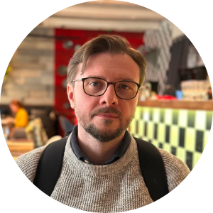
Коровченко
Игорь Сергеевич
Зам. руководителя ПИШ ВГУ, куратор ООП ИВТ, к.ф.-м.н., доц.
20 июня 2026 г.
Подробнее на https://aes.vsu.ru

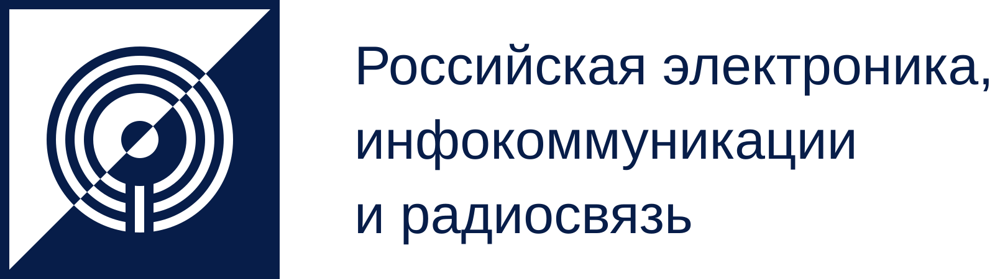

Зам. руководителя ПИШ ВГУ, куратор ООП ИВТ, к.ф.-м.н., доц.
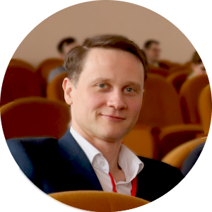
Зам. руководителя ПИШ ВГУ, куратор ООП ИКТиСС, к.ф.-м.н., доц.
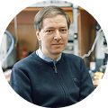
Руководитель ПИШ ВГУ,
д.ф.-м.н., проф.

Обеспечить высокопроизводительные экспортно-ориентированные секторы экономики страны квалифицированными кадрами.

В аудиториях
Вне аудиторий
Структура
Ограничения
Организация деятельности
Формирование любопытства
Опытные и эрудированные коллеги
| Направление подготовки / Реализация | ПИШ | ПММ | ФКН | ФФ |
|---|---|---|---|---|
| Инфокоммуникационные технологии и системы связи | ● | |||
| Информатика и вычислительная техника | ● | |||
| Радиофизика | ● | |||
| Мехатроника и робототехника | ● | |||
| Информационные системы и технологии | ● |

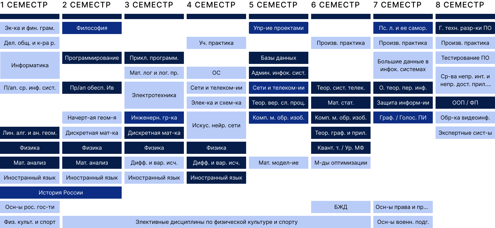

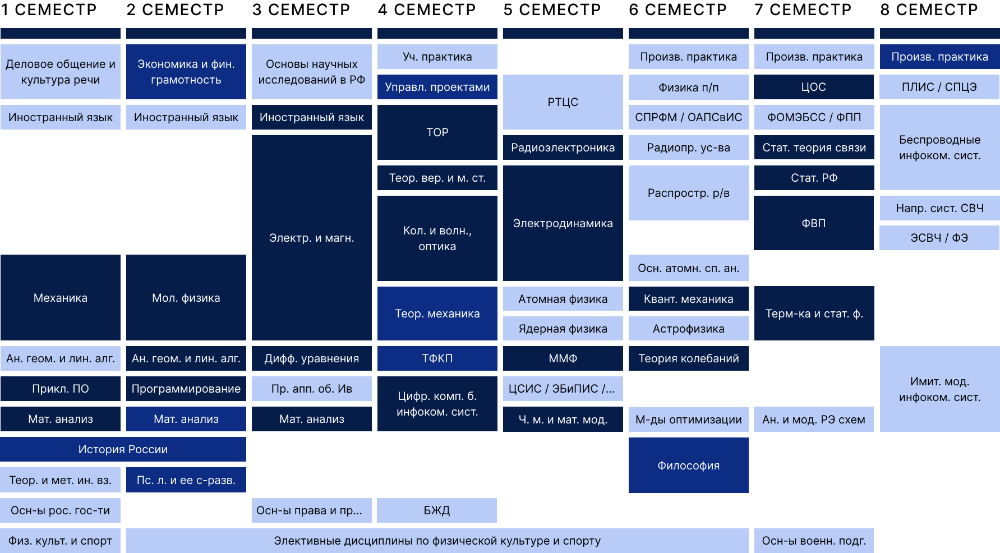

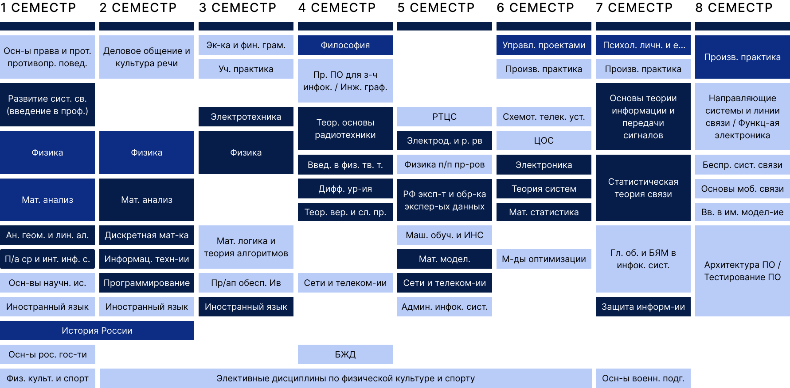
| Направление подготовки / ЕГЭ | Рус. Яз. | Мат. | Физ. | Инф. |
|---|---|---|---|---|
| Инфокоммуникационные технологии и системы связи | ● | ● | ● | ● |
| Информатика и вычислительная техника | ● | ● | ● | ● |
| Радиофизика | ● | ● | ● | |
| Мехатроника и робототехника | ● | ● | ● | ● |
| Информационные системы и технологии | ● | ● | ● | ● |
| Экзамены | Минимальные баллы |
|---|---|
| Русский язык (ЕГЭ) | 40 |
| Математика (ЕГЭ) | 40 |
| Информатика и ИКТ (ЕГЭ) | 46 |
| Физика (ЕГЭ) | 41 |
| Вступительные испытания (ВГУ) | 30 |
| Направление подготовки / КЦП | 2023 | 2024 | 2025 | 2026 |
|---|---|---|---|---|
| Инфокоммуникационные технологии и системы связи | — | — | 16 | 25 |
| Информатика и вычислительная техника | 35 | 38 | 35 | 35 |
| Радиофизика | 75 | 52 | 42 | 42 |
| Мехатроника и робототехника | — | — | — | — |
| Информационные системы и технологии | 89 | 89 | 100 | 100 |
| Направление подготовки / Проходные баллы | 2022 | 2023 | 2024 | 2025 |
|---|---|---|---|---|
| Инфокоммуникационные технологии и системы связи | — | — | — | 164 |
| Информатика и вычислительная техника | 213 | 169 | 186 | 167 |
| Радиофизика | 135 | 127 | 143 | 125 |
| Мехатроника и робототехника | — | — | — | — |
| Информационные системы и технологии | 248 | 232 | 235 | 214 |
| Направление подготовки / Реализация | ПИШ | ФФ |
|---|---|---|
| Инфокоммуникационные технологии и системы связи | ● | |
| Информатика и вычислительная техника | ● | |
| Радиофизика (2 образовательные программы) | ● | |
| Фотоника и оптоинформатика | ● | |
| Электроника и наноэлектроника | ● |
| Направление подготовки / КЦП | 2026 |
|---|---|
| Инфокоммуникационные технологии и системы связи | — |
| Информатика и вычислительная техника | — |
| Радиофизика (2 образовательные программы) | 26 |
| Фотоника и оптоинформатика | 12 |
| Электроника и наноэлектроника | 20 |

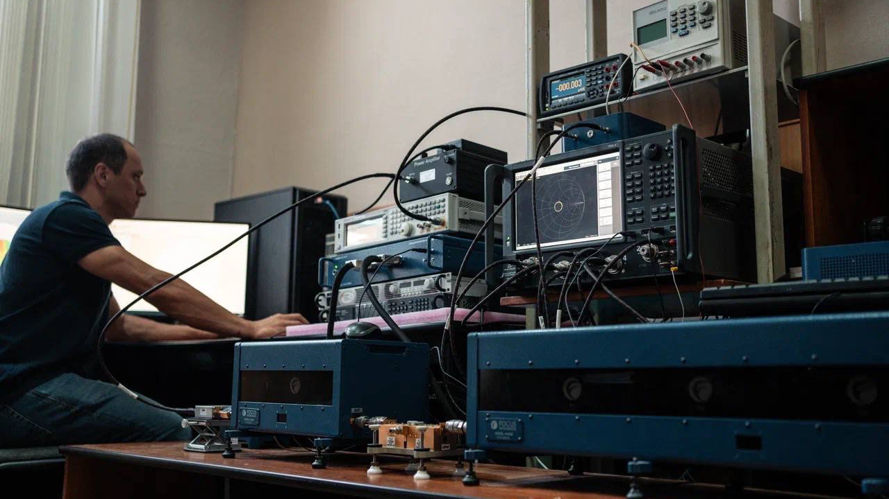
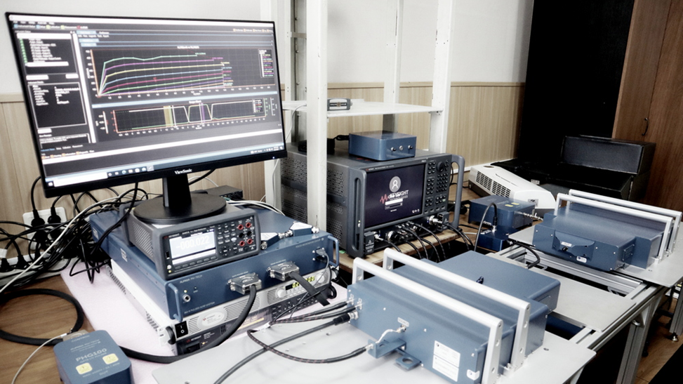
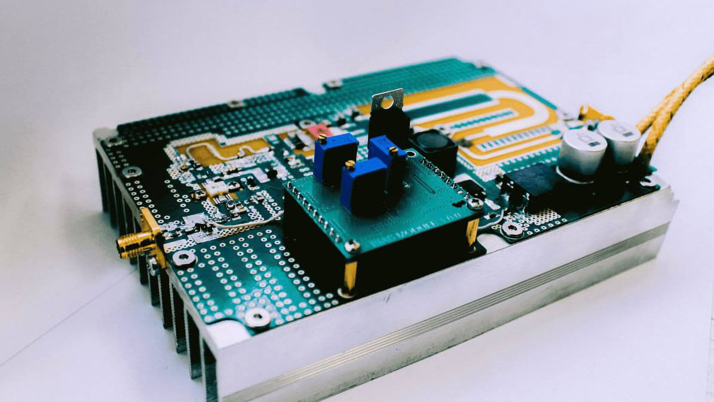
довузовское образование / бакалавриат
бакалавриат / магистратура
магистратура / производственная аспирантура
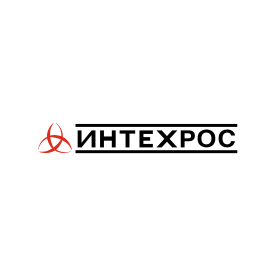
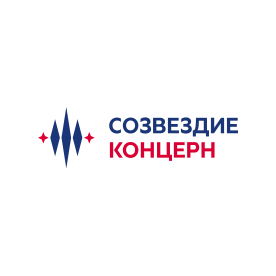

2025 год
по специальности
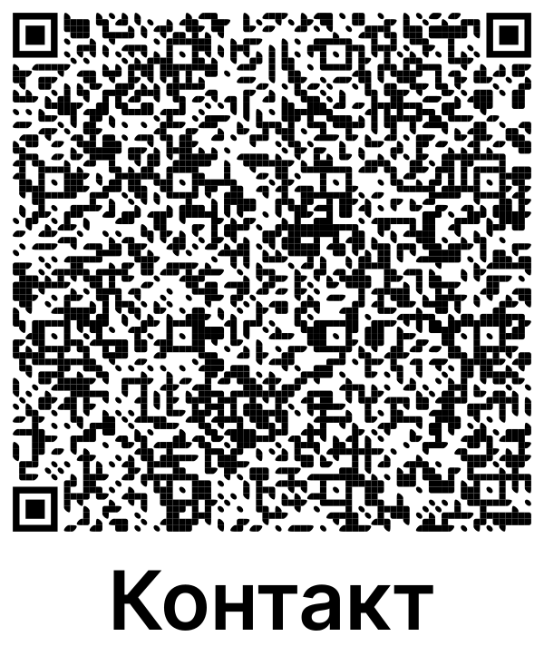
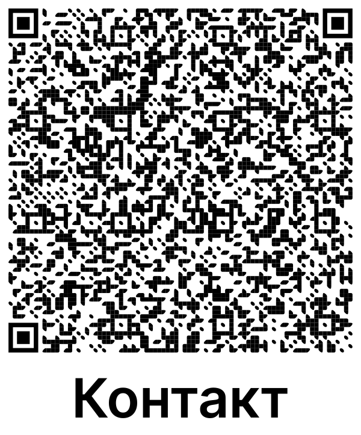
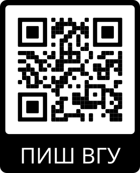
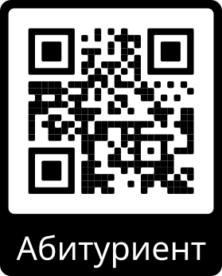
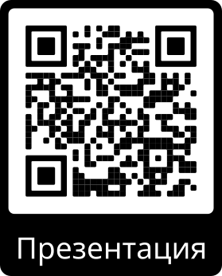